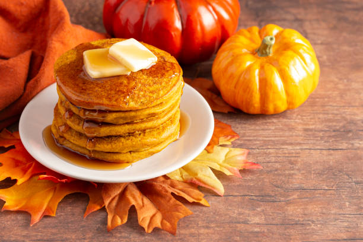

Pumpkin Pancakes

Description
A pumpkin pancake is a type of pancake that is made with pumpkin puree,
flour, eggs, milk, butter, and spices such as cinnamon, nutmeg, and
ginger. It is cooked on a griddle or a skillet until golden and fluffy,
and served with maple syrup, whipped cream, or other toppings of your
choice. A pumpkin pancake is a delicious and festive breakfast that is
perfect for the fall season.
Ingredients
- Flour
- Baking powder
- Sugar
- Salt
- Spices (such as cinnamon, nutmeg, and ginger)
- Milk
- Pumpkin puree
- Eggs
- Butter or oil
- Maple syrup or other toppings
Steps
-
Mix the dry ingredients (flour, sugar, baking powder, salt, and spices)
in a large bowl.
-
Mix the wet ingredients (pumpkin puree, milk, eggs, oil, and vanilla) in
another bowl.
- Combine the wet and dry ingredients and stir until well blended.
-
Heat a lightly greased griddle or skillet over medium-high heat and drop
about 1/4 cup of batter per pancake.
-
Cook until bubbles appear on the surface, then flip and cook until
golden on both sides.
-
Serve with your favorite toppings, such as maple syrup, whipped cream,
or nuts.